Dual Active Shield
2 bahan antiperspirant dalam 1 formula: aluminium sesquichlorohydrate dan zinc phenolsulfonate. Roll on melindungi hingga 48 jam.
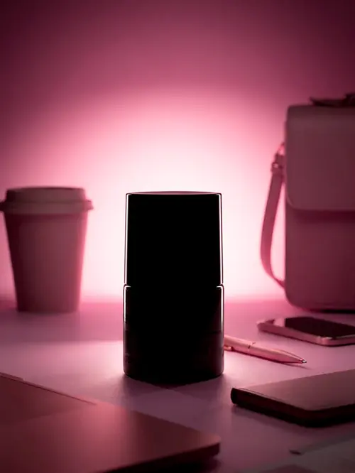
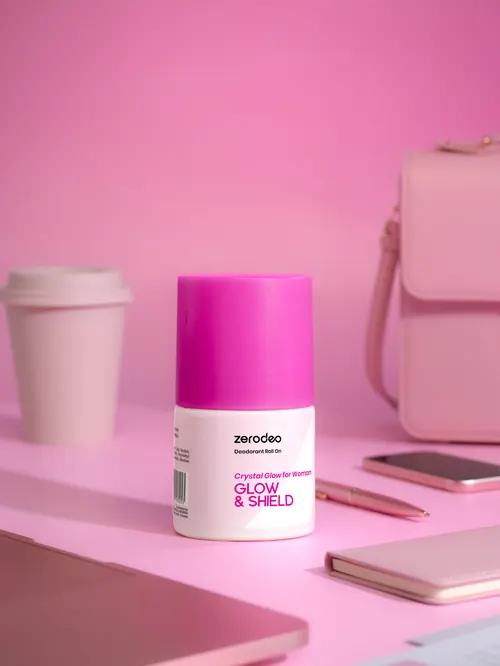
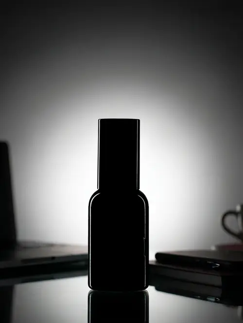
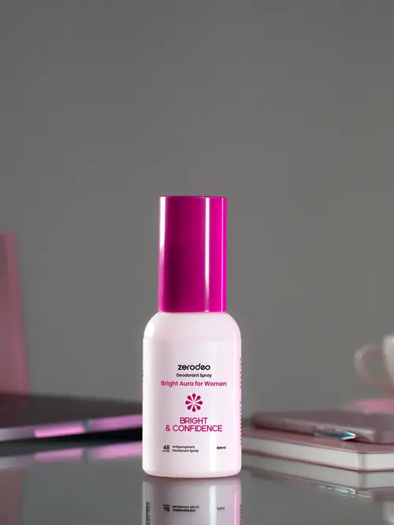
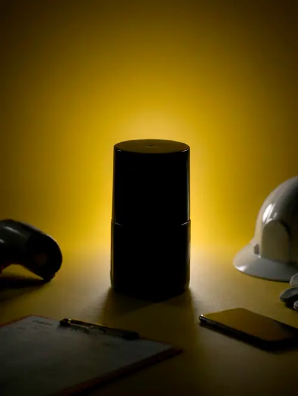
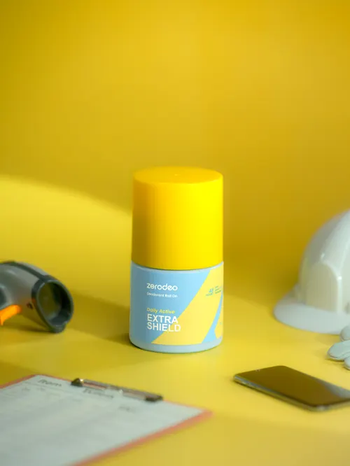
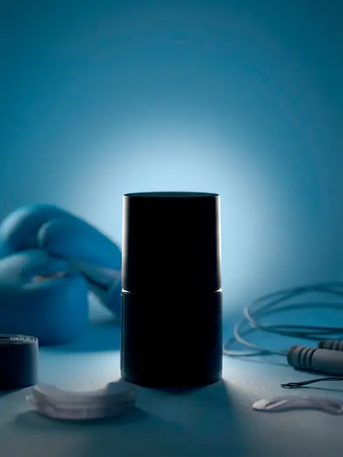
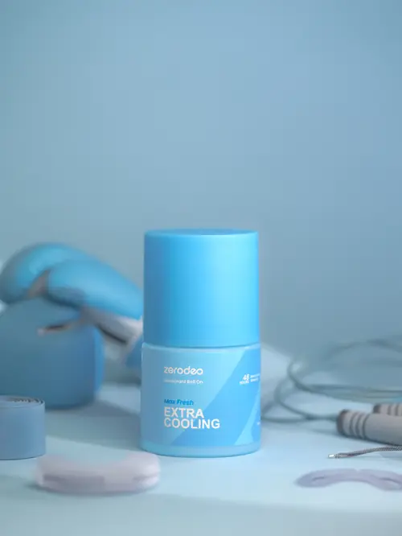
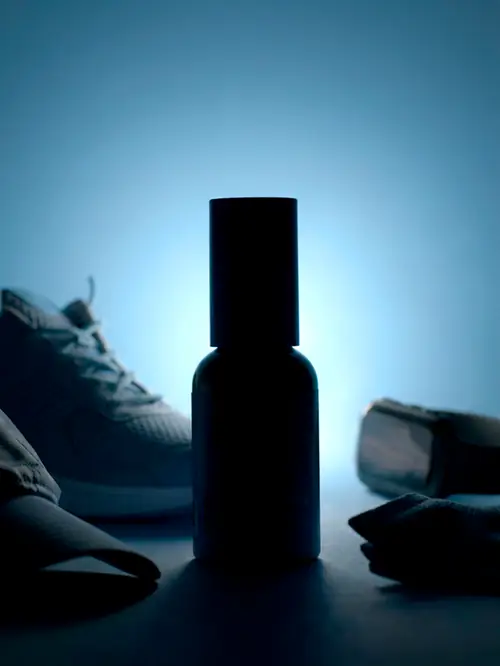
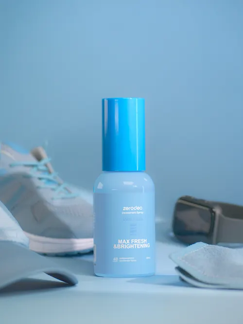
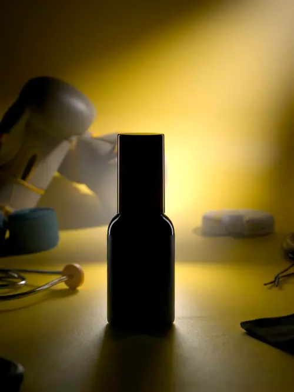
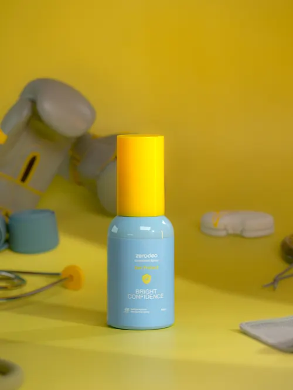
Formula
2 bahan antiperspirant dalam 1 formula: aluminium sesquichlorohydrate dan zinc phenolsulfonate. Roll on melindungi hingga 48 jam.
Ada di keenam varian. Bantu mencerahkan ketiak gelap dengan pemakaian rutin.
Sensasi dingin saat dipakai, segar di awal aktivitas.
Tiga momen gerak
Kantor, lapangan, atau olahraga? Ada Zerodeo-nya.
1/3
Aman di ruang meeting, wanginya nggak ganggu orang sebelah.
2/3
Seharian di jalan, wanginya tetap kalem dan nggak bikin enek.
3/3
Habis keringetan, yang tersisa segar, bukan campuran bau dan parfum.
6 varian · 2 format
Cari yang cocok
Soal wangi
Lembut, nggak nyengat, enak dipakai dari pagi sampai malam.
“Wanginya kok tipis?”
“Sengaja. Deodoran tugasnya jaga bau, bukan jadi parfum. Jadi aman dipadukan dengan parfum favoritmu.”
Cara pakai
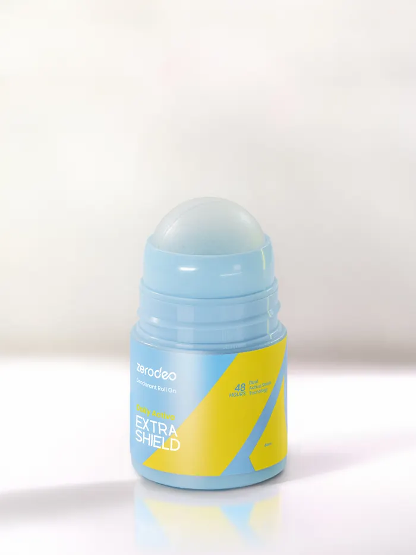
Oles ke ketiak bersih dan kering. Tunggu kering sebelum berpakaian.
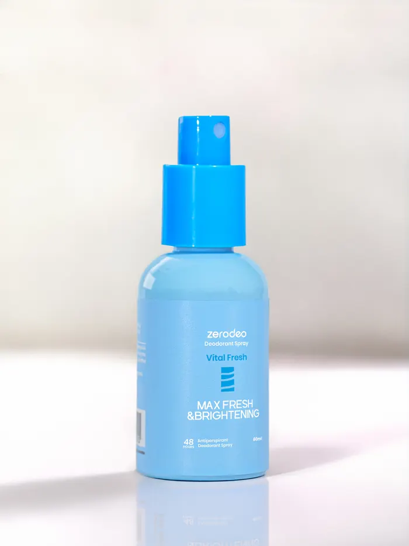
Kocok, lalu semprot ke ketiak bersih dan kering. Jangan ke wajah.
Untuk hasil cerah: pakai rutin setiap hari. Hasilnya bertahap dan berbeda tiap orang.
FAQ
Sama-sama 2 bahan antiperspirant. Roll on untuk olesan tepat, spray terasa dingin dan cepat.
Daily Active, Vital Fresh, Zen Protect untuk pria dan wanita. Crystal Glow dan Bright Aura khusus wanita.
Bertahap dengan pemakaian rutin, beda tiap orang.
Roll on tidak meninggalkan noda di pakaian. Tetap tunggu kering sebelum berpakaian.
Hindari kulit luka atau iritasi. Kalau perih atau merah, hentikan pemakaian.
Belum ada data khusus. Sarankan konsultasi dengan dokter.